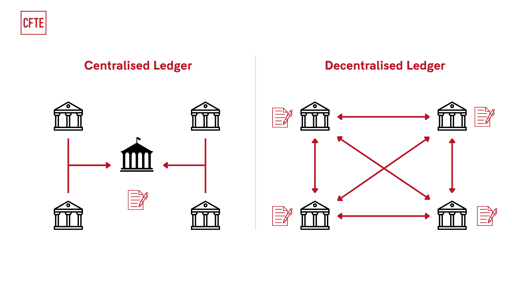
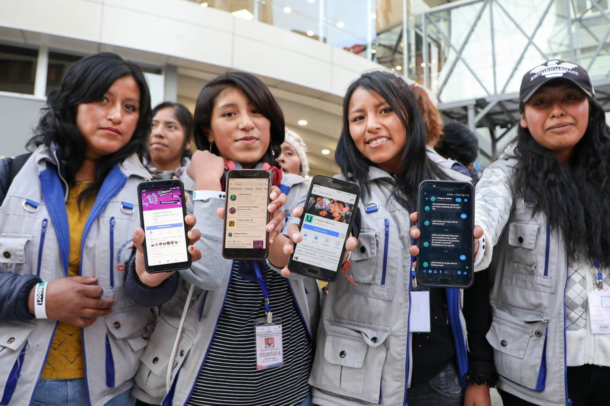

The Power of Transparency Technology
Research Paper - Sustainable Development Goal 16.
Abstract
This study explores how modern transparency technologies help achieve Sustainable Development Goal 16 (SDG 16), which focuses on building fair, accountable, and inclusive institutions. It shows that digital tools—such as open data platforms, blockchain systems, and civic technology—play an important role in promoting justice and reducing corruption. These technologies allow the public to monitor how power is used, verify information, and expose hidden corruption. When people can clearly see and question how decisions are made, it becomes much harder for corruption and misuse of power to continue.
I. Open Data and Digital Governance
Open data has become a powerful force in improving how governments operate. By publishing financial records, contracts, and policy decisions in accessible digital formats, institutions allow citizens and organizations to examine their actions more closely. This reduces secrecy and makes it harder for corruption to occur.
Government Transparency Portals: Many countries now provide open-data platforms where journalists, researchers, and citizens can track government spending and decisions. These tools help identify issues such as unfair budget use or suspicious contracts. Countries that use open data effectively often show better governance and lower corruption levels.
Real-Time Fiscal Monitoring: New technologies allow governments to publish spending data in real time. Dashboards that show how money is being used immediately reduce the chances of funds being misused, as there is little time to hide irregular activities.
II. Blockchain for Accountability
Blockchain technology offers a new way to build trust in institutions. Unlike traditional systems, blockchain records cannot be easily changed and are shared across multiple users. This removes the risk of a single authority manipulating data.

Land Registry and Property Rights:I n many countries, land ownership records have been manipulated or lost, especially during conflicts. Blockchain creates secure and permanent records that cannot be altered, helping protect people’s property rights.
Aid Distribution Verification: International humanitarian organisations have begun deploying blockchain to track the movement of aid funds from donor to recipient. Every transaction is timestamped and publicly verifiable, making it far harder for intermediaries to divert resources intended for vulnerable communities.
III. Civic Technology and Citizen Participation
The technology of transparency functions as both a supervision instrument and an active participation mechanism. The state-society relationship changes from passive government to active citizen partnership through platforms which enable citizens to report corruption and monitor public services and participate in policy development. The SDG 16 framework requires institutions to establish responsive systems, which civic technology fulfills through its operational implementation..

Corruption Reporting Platforms: Online platforms allow people to safely and anonymously report corruption. When this information is collected and displayed, patterns of wrongdoing become visible to authorities and the public, increasing accountability.
Participatory Budgeting:Some digital platforms let citizens vote on how part of the government budget should be spent. This gives communities a direct role in decision-making and ensures that public funds are used based on people’s needs.
IV. Challenges and the Path Forward
The system faces three major challenges which include its operation in areas with limited connections and its potential to be used for surveillance purposes and its digital literacy requirements which will prevent the targeted communities from gaining access to its benefits. The system achieves transparent results through technology when it operates by true governmental dedication and complete legal systems.
The Digital Divide: Current digital systems will develop digital infrastructure which will create open government systems that permit public access to their operations. Meaningful transparency requires meaningful access. The open-data portals will remain inaccessible to most users because they need advanced technical skills and reliable internet access to navigate their content. The three essential elements for equal transparency are inclusive design and offline access solutions and digital literacy development initiatives.
Conclusion: Transparency technology is one of the most powerful tools for achieving SDG 16. It improves governance by making power visible, trackable, and open to challenge. It also strengthens the relationship between governments and citizens by encouraging participation and trust. However, technology alone is not enough. Real progress depends on strong political commitment, clear laws, and active citizen involvement